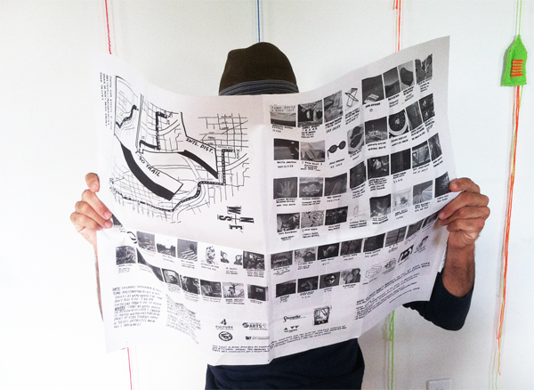

NEPO 5K DON'T RUN
September 8, 2012

Believe it or not, we are doing it again! NEPO 5k DON'T RUN will be hoping, skipping, crawling, jaunting, hobbling, trekking, stumbling, trotting, moonwalking, un-running and no-running back in 2012!
NEPO House is proud to present the second iteration of NEPO 5k Don't Run. Curators Klara Glosova, Sierra Stinson and Zack Bent have invited a profusion of Seattle artists to create projects for an (almost) 5 kilometer route leading through diverse urban environments. In a true NEPO fashion (we like to do things backwards) this year's Don't Run is reversed, shortened and almost entirely downhill! On September 8th, starting at NEPO House on Beacon Hill and finishing in front of Kobe Terrace Gardens in the International District, participants will encounter city streets populated with artwork, installations and performing artists. Finish-line show MCed by Jake Stratton will feature live music by Bavarian Village Band, multimedia show by Airport, DJ Never Leaves, performance by Seattle Butoh Festival, DAIPANbutoh dancers, storefront video installations, LxWxH pop-up store, food trucks and beer garden. Expect the unexpected!
Artists: Vis-a-Vis Society, Britta Johnson, Gretchen Bennett, Nathaniel Russell, Paul Komada, Lindsey Apodaca and Mckenzie Porritt, Ruthie Tomlinson, Taylor Pinton, Matt Hilger, Whitney Ford-Terry, Rumi Koshino, Joanna Lepore, Erin Elyse Burns, Graham Downing, Max Kraushaar, Virginia Wilcox, Hanita Schwartz, Meital Katz-Minerbo, Glenn Herlihy, Leanne Grimes, Brandon Aleson, Ken Turner, Serrah Russell, Sarah Galvin, Maggie Carson Romano, Eric Olson, Anne Blackburn, Lauren Max, C.M. Ruiz, Nicholas Nyland, Nat Evans, Aaron Asis, Steve Sewell, Julia Haack, Ye-Ye Collective, Fictilis, Kate Clark, George Rodriguez, John Osebold, Chris Buening, Seth Damm, Keeara Rhoades, A K Mimi Alin, Allyce Wood, Andrew Peterson and meadow starts with p, Andy Fallat, Diana Falchuk, JD Banke, Eric Aguilar, Nko, Devon Midori Hale, Keely Isaak Meehan, Bryan Schoneman, Zack Bent, Jennifer Zwick, Rodrigo Valenzuela, Amanda Manitach, Alice Ghosti, Baso Fibonacci and more.
Date: Saturday September 8, 2012
Time:
Registration by Vis-a-Vis Society at NEPO House 2:30-4:00pm
Don't Run 4:00-7:00pm
Finish-line show 7:00-10:00pm
Where:
Start at NEPO House on Beacon Hill (1723 S Lander Street, Seattle, WA 98144)
Finish in front of Kobe Terrace Park in the International District (S Main Street and Maynard Avenue S)
What else you need to know: event is free to the public, we ask for suggested donation of $5 to help us offset costs -- participants of all ages are welcome -- we encourage taking Light Rail to the start, NEPO House is located one block from Beacon Hill Light Rail Station.
Organized by NEPO House. NEPO House is an Associated Program of Shunpike. This event is made possible by funding from 4Culture and The Seattle Office of Arts and Cultural Affairs.
---------------------------------------------------------------------------More information about NEPO 5k Don't Run 2011.
-------------------------------------------------------------------------